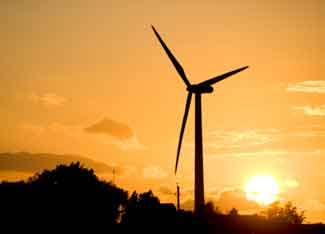

MARCO RICHTER/ISTOCKPHOTO
States such as Texas and California are already national leaders in the movement toward alternative fuels, but many more states are jumping on the proverbial bandwagon and adding their own green power arrays.